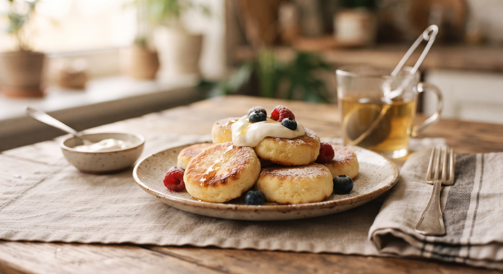
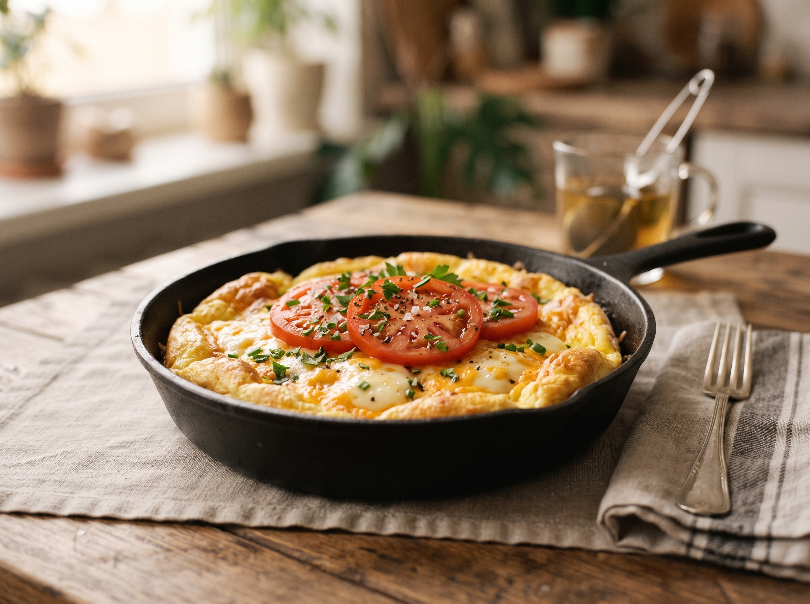
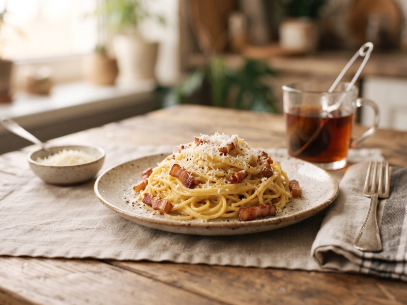
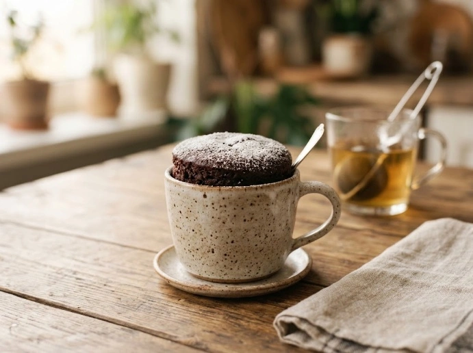
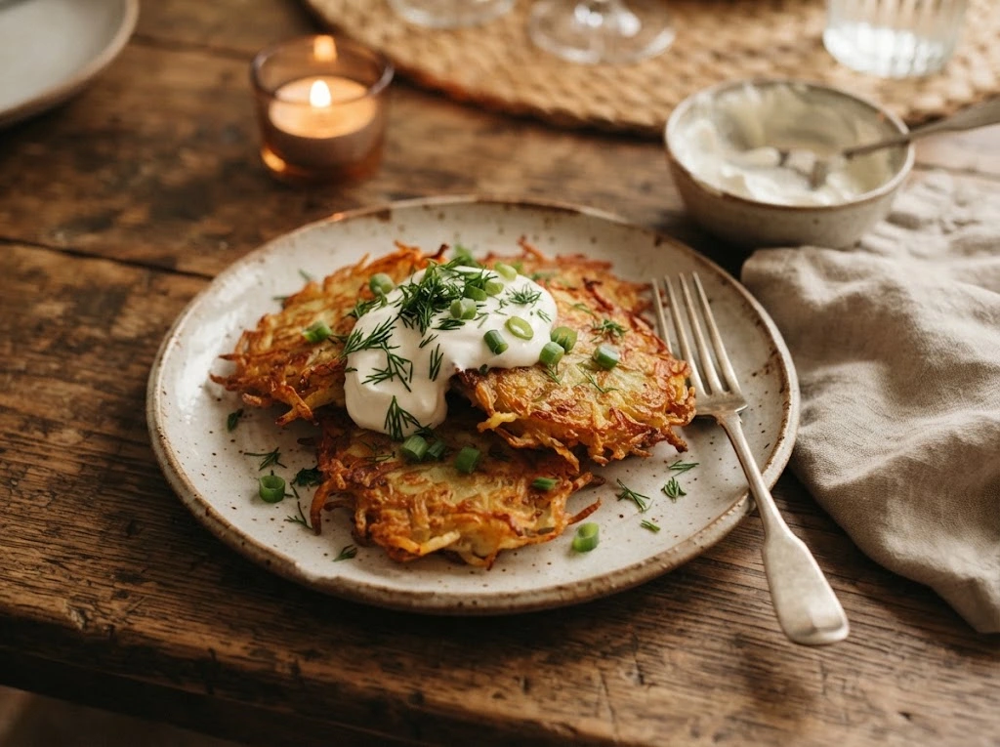

Обід ★ 4,8 з 5
Борщ класичний
Насичений борщ на яловичому бульйоні з буряком, капустою та картоплею.
Шукайте за назвою чи продуктами та уточнюйте результат фільтрами.
Показано рецептів: 8
Обід ★ 4,8 з 5
Насичений борщ на яловичому бульйоні з буряком, капустою та картоплею.


Сніданок ★ 4,5 з 5
Швидкий сніданок на одній сковорідці з мінімумом продуктів.




